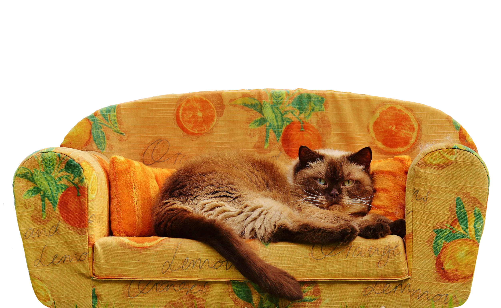

Cuidar
é um
ato de amor!
Cuide melhor do seu animal com
informações, orientação e ajuda.


Mantenha os passeios em dia
Passeios ajudam o cachorro a gastar energia, se exercitar e explorar o ambiente. Faça passeios de acordo com a idade e as condições do animal.

Mantenha a caixa de areia limpa
Limpe a caixa de areia regularmente. Isso ajuda a manter o gato confortável e evita odores desagradáveis no ambiente.
Cuidados para
seu Pet
Encontre dicas simples para cuidar melhor do seu pet. Acesse a página de cuidados e descubra mais informações sobre saúde, segurança e bem-estar.
Faça nosso questionário e descubra.
Fazer Questionário